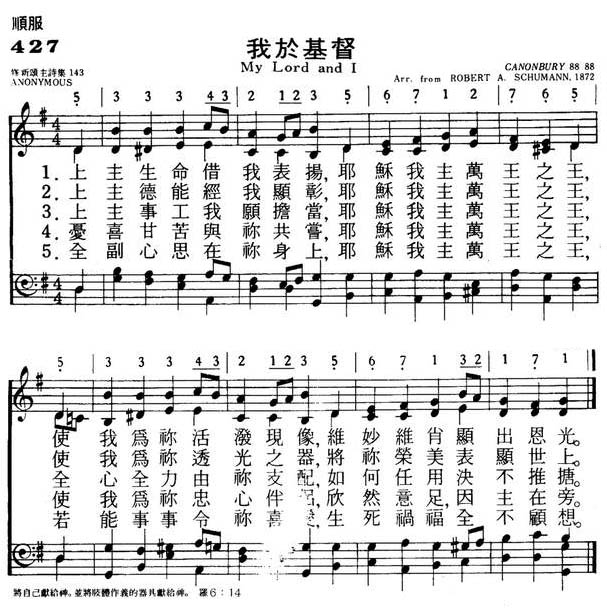
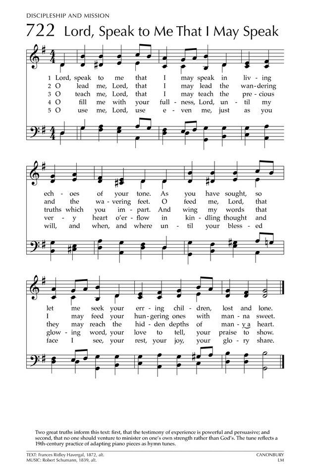

|
|
颂主新歌 427我于基督 |
|
nil |
1.上主生命借我表扬，耶稣我主万王之王， 使我为你活泼现像，惟妙惟肖显出恩光。 2.上主德能经我显彰，耶稣我主万王之王， 使我为你透光之器，将你荣美表显世上。 3.上主事工我愿担当，耶稣我主万王之王， 全心全力由你支配，如何任用绝不推搪。 4.忧喜甘苦与你共尝，耶稣我主万王之王， 使我为你忠心伴侣，欣然意足，因主在旁。 5.全副心思在你身上，耶稣我主万王之王， 若能事事令你喜爱，生死祸福全不顾想。 |
|
https://www.mred365.cn/szxg/7430.html   |
|
|
|
|

Lord, Speak to Me, that I May Speak (Canonbury) https://youtu.be/7mLa0Z2YM4U -
Hymn Tune CANONBURY by Robert Schumann For four Baritone Horns.
https://youtu.be/pGtmYcyeXyk
| Short Name: | Robert Schumann |
| Full Name: | Schumann, Robert, 1810-1856 |
| Birth Year: | 1810 |
| Death Year: | 1856 |
Robert Alexander Schumann DM Germany 1810-1856.

Born at Swickau, Saxony, Germany, the last child of a novelist, bookseller, and publisher, he began composing music at age seven. He received general music instruction at the local high school and worked to create his own compositions. Some of his works were considered admirable for his age. He even composed music congruent to the personalities of friends, who took note of the anomaly. He studied famous poets and philosophers and was impressed with the works of other famous composers of the time. After his father’s death in 1826, he went to Leipzig to study law (to meet the terms of his inheritance). In 1829 he continued law studies in Heidelberg, where he became a lifelong member of Corps Saxo-Borussia Heidelberg. In 1830 he left the study of law to return to music, intending to pursue a career as a virtuoso pianist. His teacher, Friedrich Wieck, assured him he could become the finest pianist in Europe, but an injury to his right hand (from a practicing method) ended that dream. He then focused his energies on composition, and studied under Heinrich Dorn, a German composer and conductor of the Leipzig opera. Schumann visited relatives in Zwickau and Schneeberg and performed at a concert given by Clara Wieck, age 13 at the time. In 1834 he published ‘A new journal for music’, praising some past composers and deriding others. He met Felix Mendelssohn at Wieck’s house in Leigzig and lauded the greatness of his compositions, along with those of Johannes Brahms. He also wrote a work, hoping to use proceeds from its sale towards a monument for Beethoven, whom he highly admired. He composed symphonies, operas, orchestral and chamber works, and also wrote biographies. Until 1840 he wrote strictly for piano, but then began composing for orchestra and voice. That year he composed 168 songs. He also receive a Doctorate degree from the University of Jena that year. An aesthete and influential music critic, he was one of the most regarded composers of the Romantic era. He published his works in the ‘New journal for music’, which he co-founded. In 1840, against the wishes of his father, he married Clara Wieck, daughter of his former teacher, and they had four children: Marie, Julie, Eugenie, and Felix. Clara also composed music and had a considerable concert career, the earnings from which formed a substantial part of her father’s fortune. In 1841 he wrote 2 of his 4 symphonies. In 1843 he was awarded a professorship in the Conservatory of Music, which Mendelssohn had founded in Leipzig that same year, When he and Clara went to Russia for her performances, he was questioned as to whether he also was a musician. He harbored resentment for her success as a pianist, which exceeded his ability as a pianist and reputation as a composer. From 1844-1853 he was engaged in setting Goethe’s Faust to music, but he began having persistent nervous prostration and developed neurasthenia (nervous fears of things, like metal objects and drugs). In 1846 he felt he had recovered and began traveling to Vienna, Prague, and Berlin, where he was received with enthusiasm. His only opera was written in 1848, and an orchestral work in 1849. In 1850 he succeeded Ferdinand Hiller as musical director at Dusseldorf, but was a poor conductor and soon aroused the opposition of the musicians, claiming he was impossible on the platform. From 1850-1854 he composed a wide variety of genres, but critics have considered his works during this period inferior to earlier works. In 1851 he visited Switzerland, Belgium, and returned to Leipzig. That year he finished his fourth symphony. He then went to Dusseldorf and began editing his complete works and making an anthology on the subject of music. He again was plagued with imaginary voices (angels, ghosts or demons) and in 1854 jumped off a bridge into the Rhine River, but was rescued by boatmen and taken home. For the last two years of his life, after the attempted suicide, Schumann was confined to a sanitarium in Endenich near Bonn, at his own request, and his wife was not allowed to see him. She finally saw him two days before he died, but he was unable to speak. He was diagnosed with psychotic melancholia, but died of pneumonia without recovering from the mental illness. Speculations as to the cause of his late term maladies was that he may have suffered from syphilis, contracted early in life, and treated with mercury, unknown as a neurological poison at the time. A report on his autopsy said he had a tumor at the base of the brain. It is also surmised he may have had bipolar disorder, accounting for mood swings and changes in his productivity. From the time of his death Clara devoted herself to the performance and interpretation of her husband’s works.
John Perry
Notes
Derived from the fourth piano piece in Robert A. Schumann's Nachtstücke, Opus 23 (1839), CANONBURY first appeared as a hymn tune in J. Ireland Tucker's Hymnal with Tunes, Old and New (1872). The tune, whose title refers to a street and square in Islington, London, England, is often matched to Havergal's text.
CANONBURY has a simple binary form, which consists of two versions of the same long melody. Sing in parts, ideally with a sense of two long lines rather than four choppy phrases, possibly with a fermata at the end of the first long line.
Robert Schumann (b. Zwickau, Saxony, Germany, 1810; d. Endenich, near Bonn, Germany, 1856) wrote no hymn tunes himself, though a few of his lyrical melodies were adapted into hymn tunes by hymnal editors. One of the greatest musicians of the Romantic period, Schumann did not at first seem destined for a musical career. Although he was a precocious piano player, his mother and his guardian insisted that he study for a legal career. From 1828 to 1830 he studied law at Leipzig and Heidelberg Universities, but much of his time was consumed with music and poetry. From 1830 until his death Schumann devoted his life to music. After a finger injury terminated his concert career as a pianist in 1832, he turned completely to composition. Schumann composed successfully in many genres but became especially famous for his piano works and song cycles. In 1840 he married Clara Wieck, whom he had known since 1828; she was a famous pianist and composer in her own right who inspired many of Schumann's songs. He suffered from depression for much of his adult life and in 1854 after an unsuccessful suicide attempt, was admitted to a mental institution, where he later died. Schumann founded the magazine Neue Zeitschrift für Musik and edited it for ten years.
--Psalter Hymnal Handbook, 1988